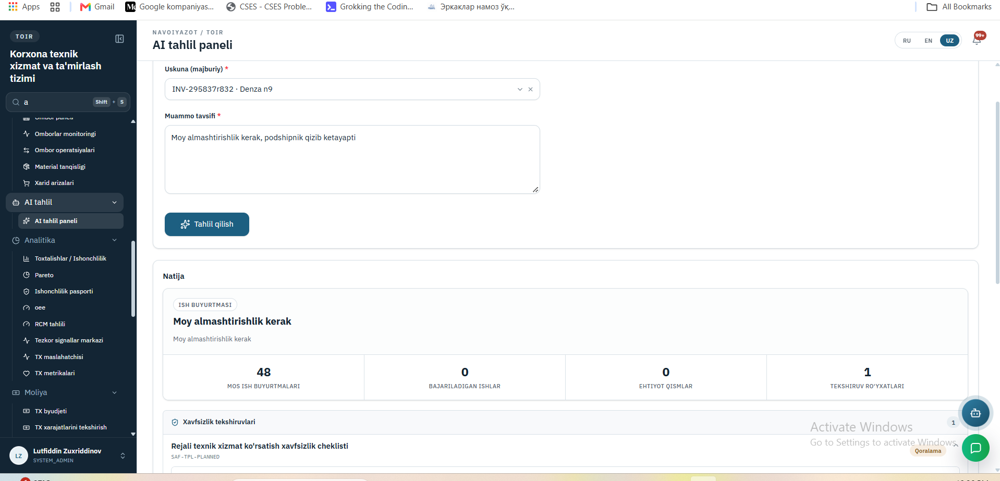
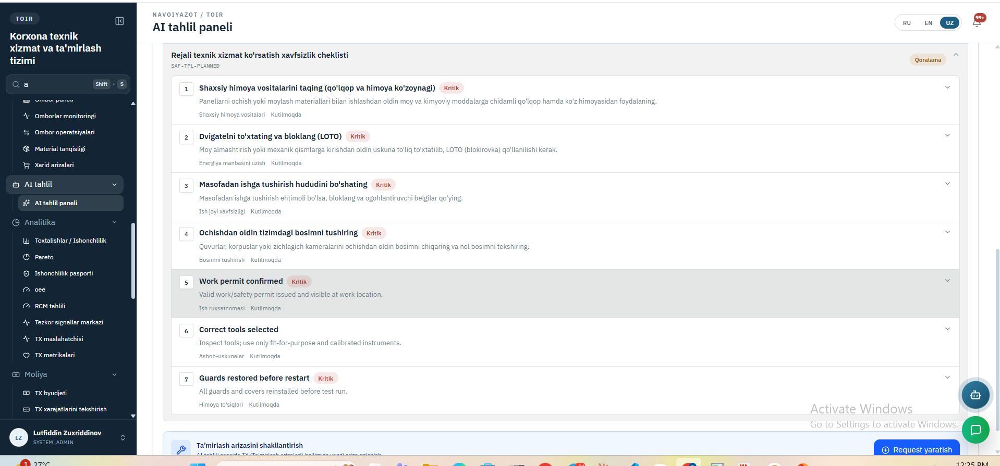
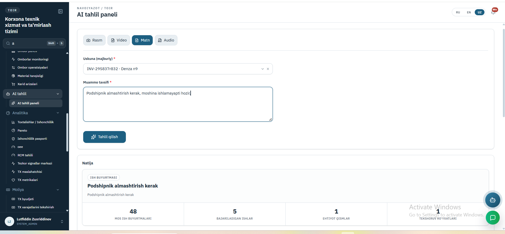
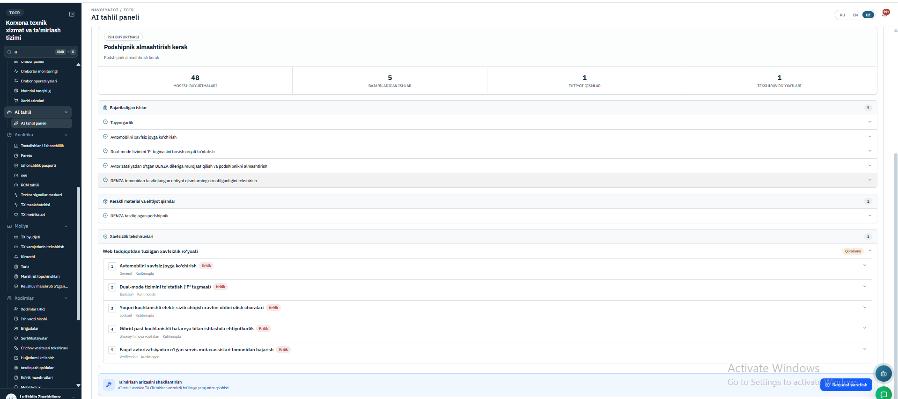

Work-order yaratish
Xodim nosozlikni o'z so'zlari bilan aytadi — matn, ovoz yoki video orqali. Tizim undan muammoni ajratib oladi va ta'mirlash so'rovi qoralamasini tayyorlaydi: nima qilish kerak, qanday ehtiyot qism ketadi, qanday xavfsizlik choralari zarur.
Maqsad
Nima muammoni hal qiladi.
Ta'mirlash so'rovini to'ldirish sekin ish: vazifalar ro'yxati, ehtiyot qismlar, normativ soat, xavfsizlik nuqtalari — hammasi qo'lda yoziladi. Tajribali usta buni yoddan biladi, yangi xodim esa har safar kimdandir so'raydi.
Bu yerda esa qoralama o'zi tayyorlanadi. Xuddi shu uskunada avval shunday ish bajarilgan bo'lsa, o'sha ish tajribasi qayta ishlatiladi. Bazada topilmasa — ishonchli manbalardan qidirib chiqariladi, lekin «bazadan olindi» deb ko'rsatilmaydi.
Ishlash WorkFlow
Tugun ustiga bosing — nima qilishi haqida qisqa ma'lumot chiqadi.
Namunalar



